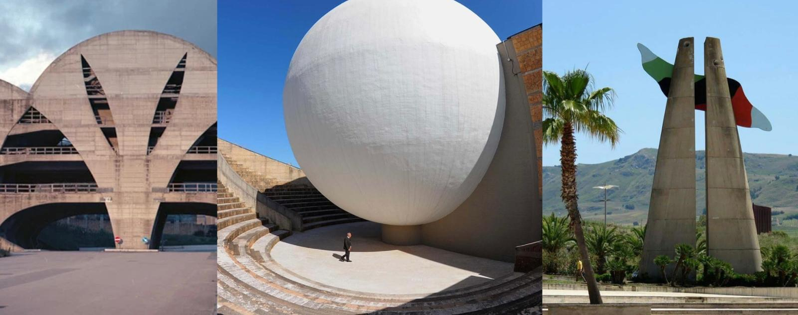

Una città contemporanea, rinata grazie all'arte; il "Cretto di Burri", una delle opere di land art più grandi al mondo. IN questo sito esploreremo la città di Gibellina sotto tutti gli aspetti; una città ricostruita con un forte legame all’arte e all’architettura contemporanea, che rappresenta un unicum in Italia, ma che dentro di se porterà sempre una mancanza. E' stata scelta Gibellina come tema di questo progetto per il suo valore storico e artistico, la sua storia riuscirebbe a colpire tutti noi profondamente, ed e ancora di più da chiunque la visiti.
La Valle del Belice è localizzata nella parte nord-occidentale della Sicilia e viene delimitata tra le province di Trapani, Agrigento e Palermo; ha origini antichissime, risalenti al I e II millennio a.C., e, chiaramente, ha ospitato diversi popoli ed è stata fondamenta per diverse culture. Ma purtroppo, tra il 15 e il 16 gennaio del 1968, questo luogo è stato segnato da un impronta indelebile, un violento sisma ha portato alla luce ingenti danni e ha raso al suolo diverse città,tra cui, proprio Gibellina.
Per comprendere meglio la rinascita artistica che ha avuto Gibellina dopo la tragedia è necessario nominare Ludovico Corrao, sindaco, ai tempi, di Gibellina, che ha reso possibile tutto questo. Grazie alla sua determinazione in Sicilia sono giunti svariati artisti contemporanei per contribuire alla sfida a loro presentata: "sogno, per Gibellina, di una ricostruzione in nome dell'arte e della bellezza." Inoltre, Corrao è stato anche fondatore di due istituzioni culturali: nel 1980 inaugurò il MAC, ovvero il Museo civico d'Arte Contemporanea, distante 11km dalla nuova città, e, successivamente, nel 1992 Corrao istituì la fondazione Orestiadi - Istituto di Alta Cultura Orestiadi Onlus che comprende il Museo delle Trame del mediterraneo, situato all'entrata della città.
Molti sono gli artisti che Corrao ha portato a Gibellina, in primis Pietro Consagra, un artista che ha lavorato in stretti rapporti con il sindaco e ha realizzato alcune delle opere architettoniche e scultoree più importanti che troviamo nella città, tra cui il simbolo con il più forte messaggio di rinascita in tutta la valle: la porta del Belice; costruita nel 1981 Consagra designa questa porta per delimitare la fine di Gibellina vecchia con l'inizio di una rivoluzione artistica che presenterà la città di Gibellina nuova, segna l'inizo di un nuovo capitolo, inoltre l'intento di Consagra era quello di progettare una città frontale, ovvero una città in cui l'unico punto di vista è quello dell'individuo che osserva.
Gibellina è un esempio esemplare di rigenerazione umana basata su un progetto di arte contemporanea idealizzata dai migliori urbanisti affiancati da artisti che si sono cimentati nel modellare nel migliore dei modi una città così moderna che rispiecchiasse pienamente l'idea di 'contemporaneità'; come accennavo prima però nella città si sente ancora che manca qualcosa, come se dopo il tragico terremoto si sia spenta. Ma Gibellina non è solo un luogo di memoria e rinascita artistica, ma anche un vivace centro culturale che ospita eventi e festival realizzati per ricordare a tutti gli abitanti che dietro la drammaticità della storia questo paese è un esempio unico in tutta Italia. Questo rende il paese una tappa imperdibile per chi vuole immergersi in un’esperienza unica tra arte, storia e cultura.
Sei appassionato di arte, cultura e storia? Non puoi perderti una gita a Gibellina, visitando i luoghi più importanti e significativi; è un viaggio tra la più moderna rigenerazione umana tramite l'arte, arte contemporanea, un arte di cui la città è tappezzata e in cui ci si può quasi perdere. Sull'autostrada, entrando a Gibellina nuova si può ammirare la magnifica porta del Belice, una stella monumentale che apre le porte a un paradiso d'arte contemporanea che si presenta con la prima tappa: il Museo delle Trame Mediterranee.
Ludovico corrao che ha realizzato il progetto della fondazione orestiadi è stato colui che ha reso possibile la realizzazione del museo delle Trame Mediterranee, in questo museo troviamo apporti artistici e creativi che dal Medio Oriente attraverso il Nord Africa sono arrivati in Spagna e poi in Francia, e contemporaneamente, attraverso la Sicilia, in Italia, 'hanno lasciato numerose tracce sia nelle arti visive che nella cultura materiale' In questo museo troviamo: arti decorative, contemporanee e visive; rispettivamente troviamo ceramiche, arte tessile e gioielli, poi ancora, riguardante l'arte contemporanea troviamo la raccolta giovanile di Corrao, nel 'corpo centrale', e il 'granaio' in cui troviamo opere di artisti provenienti da diverse parti del mondo, tra cui: Mario Schifano, Hakim Abbcci, Li Xiang Yang. Un nucleo specifico è composto invece dalle scenografie degli spettacoli delle Orestiadi, tra cui spiccano le macchine spettacolari di Arnaldo Pomodoro, l’installazione Gibella del martirio di Emilio Isgrò e La montagna di sale, ideata da Mimmo Paladino per La Sposa di Messina (esterno). Negli spazi antistanti il museo si trovano installazioni di Alfredo Romano, Richard Long, Peter Briggs, Francesco Arecco, Michele Cossyro, Ben Jakober, Salvatore Cuschera. Nel progetto 'Orestiadi' si vuole portare alla luce e sensibilizzare il territorio, ma soprattutto chi lo abita, sul multiculturalismo intorno a noi, che ci riguarda direttamente, e questo valore emerge chiaramente, di conseguenza ci ritroviamo davanti ad un ventaglio di stili, tecniche e materiali, vastissimo, il tutto in un clima di creatività tesa a cogliere anche lo spirito del nostro tempo. E' un modo per approfondire un genius loci che è frutto di una ampia dialettica tra l’antropologia esistenziale dell’artista e quella riguardante la geografia del posto. Dunque, alla fine dei conti, prevale un nomadismo culturale che dà fertilità alla presenza di opere per nulla statiche, capaci invece di bucare il territorio, aprirlo a sorprendenti corto-circuiti che arricchiscono la conoscenza dell’arte e della problematica realtà che ci circonda.
Dopo aver esplorato il Museo una delle cose migliori da fare non è altro che visitare le opere che ci attendono a cielo aperto in pieno centro a Gibellina nuova. troviamo inanzi tutto il 'sistema delle piazze'; ideato da Franco Lupini e Laura Thermes è l cuore di Gibellina, riguarda diverse piazze interconnesse e ricche di stupende architetture, come la 'torre civica', un opera di Alessandro Mendini che sfida i canoni dell'architettura razionalista, o ancora, 'l'obelisco' di Arnaldo Pomodoro a Piazza Noceto che rappresenta la verticalità della memoria. Il 'Teatro All'Aperto' che ci accoglie nella città di Gibellina, assieme alla 'chiesa Madre' sono anch'essi due delle architetture più monumentali e futuriste della città, pensate per essere funzionali ma allo stesso tempo sculture abitabili.
Tra le tappe imperdibili troviamo, come citato in precedenza, il MAC, anche questo tra le più vivide esperienze di arte contemporanea del 900', varie sono le opere che troviamo al suo interno, originali, ma soprattutto di molteplici artisti, alcuni dei quali abbiamo trovato anche al museo delle trame mediterranee, come Schifano.
Non per ordine di importanza, troviamo infine il 'Cretto' di Burri;